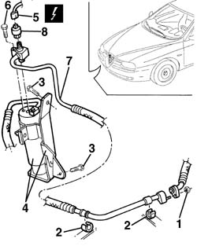

5040A56 line from dehydrating - r r
- Path
- Procedures > 50 AUXILIARY UNITS > 5040 AIR CONDITIONING CASING AND COMPONENTS > 5040A air conditioner coolant circuit > 5040A56 line from dehydrating - r r
- Kind
- repair procedure (removal / refitting; the operation number is the code)
- Applies to
- all engines; all production periods
- Interactive page
- https://sloeber94.github.io/elrnDB-a156/en/#/3238314
Applies to: all engines; all production periods
Applies to: all engines; all production periods; only with equipment: Air Conditioner
 Removing
Removing
 Refitting
RefittingPosition the car on the lift.
Drain the coolant. 5040A10 Air conditioning refrigerant CIRCUIT - Draining and Refilling
1. Lift the car and unscrew the pipe union nut.
2. Open the clamps fastening the pipe.
3. Unscrew the dehydrating support.
4. Release the dehydrating and the support from the body.
5. Disconnect the electrical connection of the multilevel pressure switch.
 | Name | Connector |
|---|---|---|
5 | 4 stage pressure switch |
6. Unscrew the pipe.
7. Remove the pipe.
8. Unscrew and remove the multilevel pressure switch from the pipe.

Applies to: all engines; all production periods; only with equipment: Air Conditioner
Refitting
RemovingCheck that the pipe is not damaged or splitted.
Screw the multipressure switch on the pipe.
 | Fastening | Component | Ø | Value (daNm) |
|---|---|---|---|---|
- | - | Multistage pressure switch | M10 | 0.7 - 1.1 |
Reposition the pipe.
Connect the union to the dehydrating and screw it.
| Fastening | Component | Ø | Value (daNm) |
|---|---|---|---|---|
- | Bolt | Drier filter pipe connector | M6 | 0.9 - 1.2 |
Connect the multilevel pressure switch electrical connection.
Fasten the dehydrating with its support to the body.
Fasten the pipe with the clamps.
Connect the intermediate union and tighten it with the nut.
| Fastening | Component | Ø | Value (daNm) |
|---|---|---|---|---|
- | Nut | Intermediate connector | M6 | 0.9 - 1.2 |
Reload the coolant. 5040A10 Air conditioning refrigerant CIRCUIT - Draining and Refilling
Remove the car from the lift.